【最新】
和歌山で切手を高く売りたい方へ！おすすめ切手買取店TOP3｜出張買取6社を比較
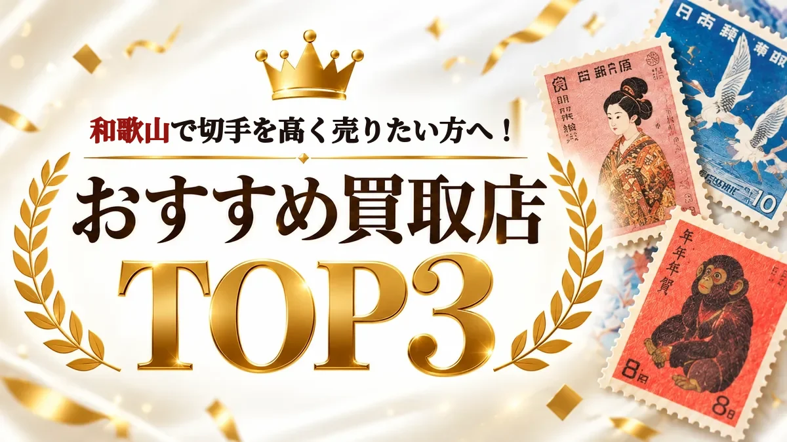
PR本ページは
切手買取おすすめBEST3
- 1

編集部評価5.0
そのまま
出張査定
最短翌日に
自宅で査定。 査定員対応満足度
93.29%※1 その場で
詳しく現金払い 見る - 2
編集部評価4.8
上場企業が
運営
仕分け不要で
そのまま査定。 累計買取
4,800万点以上※2 24時間
詳しく365日受付 見る - 3

編集部評価4.7
実例を
写真で公開
仕分け不要。対応地域なら 即日出張も。 手数料・キャンセル料0円
1点から
詳しく相談OK 見る
※1 自社
※2 2015〜2025年の
※順位は
ウリエル
ウリエルの切手買取実績
20万円の
1万円台の
実家から
まずは
横に
切手趣味週間
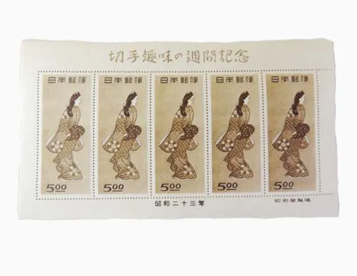
買取価格
| 品目 | 見返り美人切手など |
|---|---|
| 買取日 | 2024/01/13 |
| 地域 | 埼玉県 |
金額を
普通切手
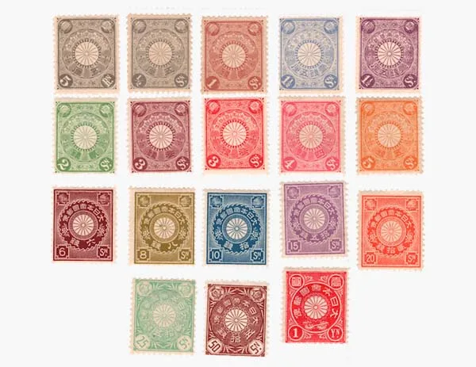
買取価格
| 品目 | 菊切手を |
|---|---|
| 買取日 | 2021/10/30 |
| 地域 | 東京都 |
金額を
切手趣味週間

買取価格
| 品目 | 月に雁切手などの |
|---|---|
| 買取日 | 2024/05/06 |
| 地域 | 神奈川県 |
金額を
切手コレクション
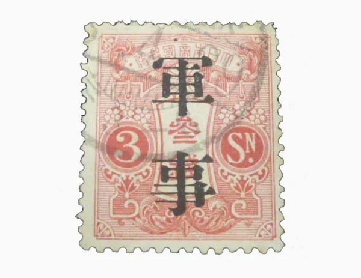
買取価格
| 品目 | 軍事切手を |
|---|---|
| 買取日 | 2021/11/06 |
| 地域 | 千葉県 |
金額を
写真・
家族の切手を売った方の声
- 40代男性埼玉県蓮田市
頼まれて
売った 切手が 驚きの 値段でした
父が子供の 頃から 切手を 集めていたので、 かなり 数が ありました。 父が 高齢に なり、 売ってくれと 手渡してきたので ウリエルさんに お願いしました。 僕は 切手の ことは あまり 分かりませんが、 珍しい 切手が あったようで、 切手が こんなに 高く 売れるなんて 知りませんでした。 父も 喜んでいました！ - 70代男性千葉県船橋市
片付けして
出てきた 切手が 思いの ほか 高い 値段で 売れました
蔵を片づけていたら 中国の 切手が いく つか 出てきました。 捨て ようかとも 思ったが、 息子に 買取して もらった ほうが いいと 言われたので ウリエルに 問い合わせてみた ところ、 珍しい 切手だったのか 高い 値段で 売れる ことが 分かりました。
※各社の
額面だけで判断しないほうがいい理由

同じ

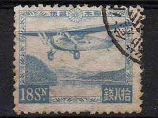
画像出典：ウリエル公式サイト掲載の
切手は「出張買取」が向いている理由
アルバムや
| お店に | 出張買取を | |
|---|---|---|
| 運ぶ手間 | アルバムや | 不要・ |
| 準備 | 枚数を | そのまま |
| 売らない場合 | もう | 断っても |
| 日時 | 営業時間内に | 希望日を |
※本ページで
出張買取を選ぶときの3つのポイント
- POINT01
仕分けず、
状態が悪くても 見て もらえるか バラ・
台紙貼り・ アルバムの まま、 汚れや 破れが あっても 相談できるかを 確認します。比較表 「どんな 切手も 見て もらえる？」タブで比較 - POINT02
すぐ
来て もらえて、
その場で現金になるか 最短の
訪問日の 目安、 24時間申し込めるか、 その場で 現金で 受け取れるかを 確認します。比較表 「出張の 頼みやすさ」 タブで比較 - POINT03
出張・
査定・ キャンセルが 無料か 金額を
聞いてから 決められるよう、 断っても 費用が かからないかを 確認します。比較表 「出張の 頼みやすさ」 タブで比較
切手買取6社の比較表3つのポイントを6項目に分けて採点しました
| サービス | 編集部 評価 | 得意な | 公式 |
|---|---|---|---|
| 1 | 編集部評価5.0 | 汚れ・
| 費用0円 詳細 |
| 2バイセル | 編集部評価4.8 | 東証上場企業が
| 査定料0円 詳細 |
| 3 | 編集部評価4.7 | 記念・
| 訪問料0円 詳細 |
| 4 | 編集部評価4.3 | 全国に
| 詳細 |
| 5日晃堂 | 編集部評価4.2 | 骨董・
| 詳細 |
| 6 | 編集部評価3.5 | 店舗＋出張・
| 詳細 |
| サービス | 汚れ・ ある | 仕分けていない 大量の |
|---|---|---|
| 1 | ◎汚れ・ | ◎バラ・ |
| 2バイセル | ◎シミ・ | ◎仕分け不要・ |
| 3 | ◎他店で | ◎仕分け不要、 |
| 4 | ◎どんな | ○台紙貼り・ |
| 5日晃堂 | ◎破れ・ | △大量・ |
| 6 | △キズ・ | ○玄関先で |
| サービス | 訪問の | 費用 | 受付 |
|---|---|---|---|
| 1 | ◎最短翌日査定 | ◎出張料・ | ◎24時間受付 |
| 2バイセル | ○その場で | ◎査定料・ | ◎24時間 |
| 3 | ◎即日出張買取 | ◎訪問料・ | ○電話 |
| 4 | ○その場で | ◎査定料・ | ◎総合受付 |
| 5日晃堂 | ○その場で | ◎出張料・ | ○電話 |
| 6 | △最短 | ◎出張買取は | △電話 |
※◎＝5点・
こんな
- 実家や
遺品整理で、 切手アルバムが まとめて 出てきた - 価値が
分からない 切手を、 仕分けず そのまま 見てほしい - 知らない
人を （玄関先での家に 上げるのは 不安 査定も できます） - 切手以外の
品物も 一緒に 査定 してほしい
手数料・
6社の早見表右上ほど「どんな切手も見てもらえて」「自宅で手軽に」頼めます
- ✔ 汚れ・バラ・大量もそのまま
- ✔ 最短翌日・24時間受付
※横軸＝
まずはウリエルで無料査定
金額を比べたい方はバイセルも
金額を
STEP
仕分け前の
- 価値の
分からない 切手も そのまま
バラ・台紙貼り・ 汚れの ある 切手も 「査定大歓迎」と 公式に記載。 - 最短翌日に
訪問・ その場で現金
出張料・査定料・ キャンセル料は 0円、 24時間受付 （年末年始を 除く）。※最短翌日は 予約状況・ 訪問先に よります。
仕分け前の
STEP
- 東証上場企業が運営
累計買取4,800万点以上 （2015〜2025年、 バイセル調べ）。 - 汚れ・
台紙貼りも 買取保証
出張・店頭なら、 シミ・ 汚れ・ 台紙貼り なども 買取保証の 対象 （重大な 損傷は 除く）。
※2社とも
切手買取おすすめランキング編集部の採点（ランキング調査概要）
迷ったら
1ウリエル編集部評価5.0
価値が
最短翌日に
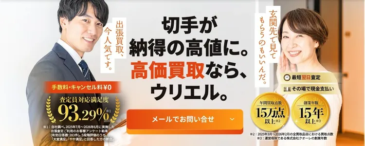
汚れ・
出張買取1回の
特徴
- 査定員対応満足度
93.29% （出張査定利用者アンケート） ※公式 - 最短翌日に
自宅で ※公式査定、 その場で 現金払い - バラ・
台紙貼り・ ※公式価値不明・ 汚れの ある 切手も そのまま相談 - 出張料・
査定料・ ※公式キャンセル料0円、 24時間受付
※1 自社
ウリエルの
- 24時間受付◎24時間受付
（年末年始を 除く） - 費用0円◎出張料・
査定料・ キャンセル料無料 - 汚れ・
破れOK ◎汚れ・破損で 他店に 断られた 切手でも 買取できる 場合あり - 大量・
アルバム ◎バラ・台紙貼り （アルバム） ・ 価値不明も そのまま。 その場で 追加OK - 訪問の
早さ ◎最短翌日査定（予約状況・ 訪問先に よる）・ その場で 現金支払い・ 玄関先査定OK - 実績公開◎写真つき実績・
利用者の 声・ 満足度 93.29% （自社調べ）
※◎＝5点・
| 買取対象 | 出張エリア |
|---|---|
| 記念・ | 関東・ |
| 買取方法 | 費用 |
| 出張・店舗 | 出張料・ |
| 受付時間 | 支払い |
| 24時間 | その場で |
出典：ウリエル公式 切手買取ページ・
横に
買取実績1

| 品目 | 毛沢東関連 |
|---|---|
| 買取価格 | 200,000円 |
| 買取日 | 2021/09/11 |
買取実績2
| 品目 | 赤猿切手を |
|---|---|
| 買取価格 | 150,000円 |
| 買取日 | 2021/12/15 |
買取実績3
| 品目 | 月に雁切手などの |
|---|---|
| 買取価格 | 120,000円 |
| 買取日 | 2024/05/06 |
買取実績4
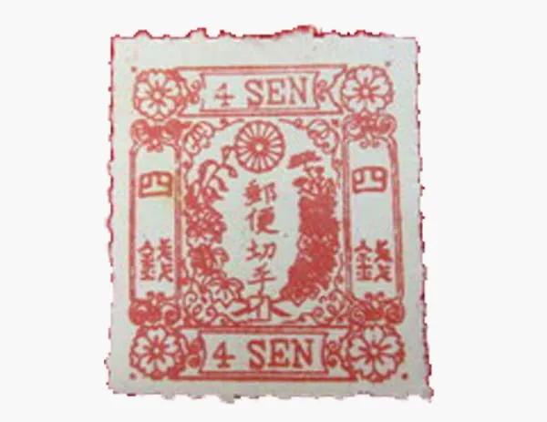
| 品目 | 桜切手などの |
|---|---|
| 買取価格 | 100,000円 |
| 買取日 | 2021/12/26 |
| 備考 | キャンペーン期間中の |
買取実績5
| 品目 | 竜文切手を |
|---|---|
| 買取価格 | 65,000円 |
| 買取日 | 2023/09/26 |
買取実績6
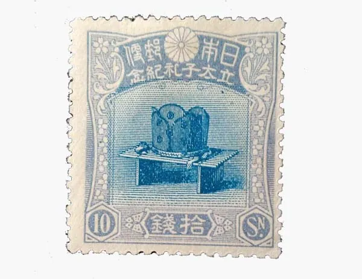
| 品目 | 立太子礼記念 |
|---|---|
| 買取価格 | 50,000円 |
| 買取日 | 2024/05/19 |
写真・
編集部の
ウリエルは
ウリエルの利用者の声（公式掲載）
- 60代女性埼玉県
さいたま市 寄り
添った お話を してくださる 方で、 とても 売りやすかったです
知人にウリエルさんを 使った 人が いて、 勧められたので 切手買取を 利用してみました。 最初は 緊張したのですが、 聞いていた 通り対応が とても よく 話も しっかり 聞いていただけました。 私の 話や 気持ちに 寄り 添ってくださった 担当者の Yさん。 売却も 安心してお任せする ことができました。
※各社の
ページへ
断っても
2バイセル編集部評価4.8
東証上場企業が
汚れ・
出張・
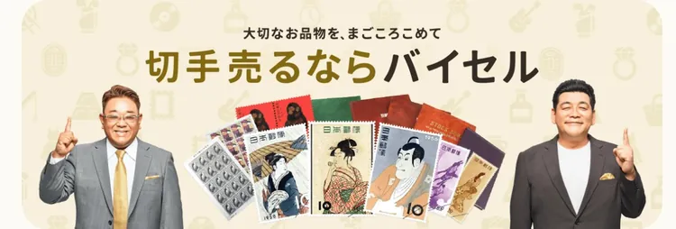
出張・
特徴
- 東証上場企業が
運営、 ※公式累計買取 4,800万点以上※2 - 出張・
店頭・ ※公式宅配の 3つの 方法 から選べる - シミ・
汚れ・ ※公式台紙貼りも 買取保証 （出張・ 店頭。 重大な 損傷は除く） - 査定料・
キャンセル料 ※公式など 各種無料、 女性査定士も 在籍 （地域・ 日程に より 対応できない 場合あり）
※2 2015〜2025年の
バイセルの
- 24時間受付◎24時間
365日受付 （電話） - 費用0円◎査定料・
キャンセル料など各種無料 - 汚れ・
破れOK ◎シミ・汚れ・ 台紙貼り なども 買取保証 （出張・ 店頭。 重大な 損傷は除く） - 大量・
アルバム ◎仕分け不要・台紙貼り・ バラも そのまま査定 - 訪問の
早さ ○その場で現金化 （最短訪問日の 記載なし） - 実績公開◎写真つき実績・
利用者の 声・ 累計 4,800万点以上 （2015〜2025年、 バイセル調べ）
※◎＝5点・
| 買取対象 | 出張エリア |
|---|---|
| 普通・ | 全国 |
| 買取方法 | 費用 |
| 出張・ | 査定料・ |
| 受付時間 | 支払い |
| 24時間 | 出張・ |
出典：バイセル公式 切手買取ページ・
横に
買取実績1

| 品目 | 前島密 |
|---|---|
| 買取価格 | 22,000円 |
| 買取日 | 2025/08/01 |
買取実績2
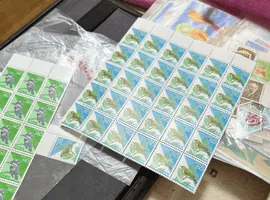
| 品目 | 普通切手 |
|---|---|
| 買取価格 | 15,300円 |
| 買取日 | 2025/05/23 |
写真・
編集部の
バイセルは
バイセルの利用者の声（公式掲載）
- 60代女性東京都
世田谷区 信頼できる
査定士さんだなと 思いました
とっても礼儀正しくてとっても 丁寧な 方でしたよ。 切手を 見て もらったんですけど、 すっごいたくさん あるのに 一枚一枚丁寧に 見て、 その 都度説明もしてくれた し信頼できる 査定士さんだなと 思いました。
※各社の
ページへ
24時間
3位〜6位
3福ちゃん編集部評価4.7
記念・
混ざっていても
対応地域なら
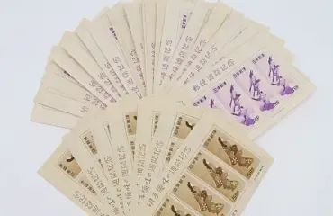
即日出張も
特徴
- 普通・
記念・ などを査定※公式特殊・ 中国 切手 - 対応地域なら
即日出張、 ※公式出張・ 店頭は 原則その場で現金 - 訪問料・
査定料・ ※公式送料・振込手数料無料 - 仕分け不要、
1点から ※公式相談できる
福ちゃんの
- 24時間受付○電話
8:00〜20:00 （申込は 24時間） - 費用0円◎訪問料・
査定料・ 送料・ 振込手数料・ キャンセル料無料 - 汚れ・
破れOK ◎他店で断られた 傷・汚れの ある 切手も 買取可能な 場合あり （状態に より 不可あり） - 大量・
アルバム ◎仕分け不要、段ボールや アルバムの バラ切手も - 訪問の
早さ ◎即日出張買取（対応地域） ・出張は 原則その場で現金 - 実績公開○写真つき実績・
利用者の声
※◎＝5点・
| 買取対象 | 出張エリア |
|---|---|
| 普通・ | 全国各地から |
| 買取方法 | 費用 |
| 出張・ | 訪問料・ |
| 受付時間 | 支払い |
| 電話 | 出張・ |
出典：福ちゃん
横に
買取実績1
| 品目 | 切手趣味週間 月に雁／見返り美人 5面シート |
|---|---|
| 買取価格 | 131,000円 |
| 買取日 | 2026/05/21 |
買取実績2

| 品目 | 中国切手 中華人民共和国 |
|---|---|
| 買取価格 | 47,000円 |
| 買取日 | 2026/07/13 |
写真・
編集部の
福ちゃんは
福ちゃんの利用者の声（公式掲載）
- 40代大阪府大阪市
安心してお任せできました
遺品整理で出てきた 切手を 買い取って もらいました。 近所の リサイクル店のような お店では 査定は 無理で、 専門の 買取店を 探していた 所、 ネットで 福ちゃんを 見つけました。 予想より 高い 金額だったし、 出張買取で 来て もらったので、 他に 売れそうな 物も 見ていただき、 まとめて 買取して もらいました。
※各社の
ページへ
断っても
4買取大吉編集部評価4.3
全国の
査定料・
特徴
- 全国に
店舗を 展開、 出張買取にも対応 - 査定料・
出張料・ 買取手数料・ キャンセル料 すべて無料 - 総合受付は
24時間・ 年中無休 （年末年始を 除く） - その場で
査定、 即現金払い
買取大吉の
- 24時間受付◎総合受付
24時間・ 年中無休 （年末年始を 除く） - 費用0円◎査定料・
出張料・ 買取手数料・ キャンセル料 すべて無料 - 汚れ・
破れOK ◎どんな状態の 切手でも 買取可能 （シミ・ 汚れ・ 耳紙の 破れ・ 日焼け等） - 大量・
アルバム ○台紙貼り・バラ切手も 買取可能 - 訪問の
早さ ○その場で即現金払い （最短訪問日の 記載なし） - 実績公開△利用者の
声 （写真つき参考価格は 日付・ 地域なし）
※◎＝5点・
| 買取方法 | 受付時間 |
|---|---|
| 店舗・ | 総合受付 |
出典：買取大吉公式 切手買取ページ
5日晃堂編集部評価4.2
破れ・
出張買取は
特徴
- 中国・
普通・ 記念・ 特殊切手など 幅広く査定 - 破れ・
汚れ・ シミの ある 切手も相談 - 出張料・
査定料 などの 手数料は 全て無料 - 出張買取は
その場で 現金お手渡し
日晃堂の
- 24時間受付○電話
8:00〜20:00 （年中無休・ 年末年始を 除く）、 メールは いつでも - 費用0円◎出張料・
査定料 などの 手数料・ キャンセル料が 全て無料 - 汚れ・
破れOK ◎破れ・汚れ・ シミ、 他店で 断られた 切手も （最終的には 状態による） - 大量・
アルバム △大量・アルバムの まま・ 仕分け不要の 記載なし （ストックブックの 買取実績のみ） - 訪問の
早さ ○その場で現金お手渡し （最短訪問日の 記載なし） - 実績公開○買取実績
（日付・ 地域） ・利用者の 声を公開
※◎＝5点・
| 買取方法 | 受付時間 |
|---|---|
| 出張・ | 8:00〜20:00 |
出典：日晃堂公式 切手買取ページ
6なんぼや編集部評価3.5
最短
バラ切手1
特徴
- 全国
140店舗以上と 出張・ 宅配で相談 - 出張は
最短 当日訪問 （予約状況に よる）、 玄関先で 大量査定 - バラ切手1
枚から でも買取 - 出張料・
査定料・ キャンセル料は無料
なんぼやの
- 24時間受付△電話
10:00〜21:00 - 費用0円◎出張買取は
出張料・ 査定料・ キャンセル料無料 - 汚れ・
破れOK △キズ・汚れの ある 訳あり品も 買取と 案内 （全品目共通の 案内） - 大量・
アルバム ○玄関先で大量査定・ バラ1枚から - 訪問の
早さ △最短当日訪問 （予約状況に よる）・ 出張は 原則振込 （事前相談で 当日現金可） - 実績公開△利用者の
声 （実績写真は 価格・ 日付なし）
※◎＝5点・
| 買取方法 | 受付時間 |
|---|---|
| 店頭・ | 電話 |
出典：なんぼや
結論：まずはウリエルで無料査定
アルバムや
その
いくらに
- 仕分けず、
そのまま - 無料で
出張査定 - 金額に
納得できなければ お断りOK
手数料・
申し込みから現金化までの流れ
申し込み・
日程調整 電話かフォームで、
希望日と おおよその 量を 伝えるだけ。 種類や 枚数が 分からなくても 大丈夫です。 ウリエルは 24時間受付 （年末年始を 除く）。 自宅で
査定 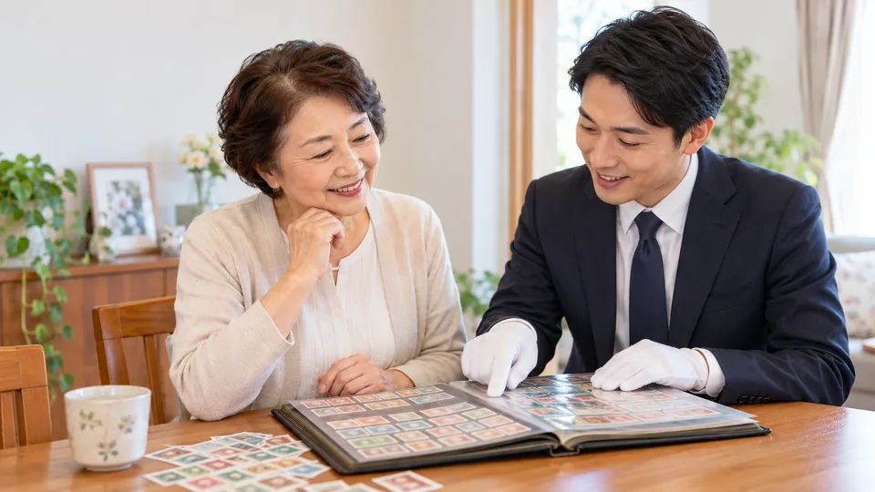
査定士が
訪問し、 アルバムや 箱に 入ったまま 確認して 金額を 伝えます。 仕分けや 枚数の 申告は 不要です。 納得したら、
その場で現金 金額に
納得できれば その場で 現金を 受け取ります。 断っても 費用は かかりません。 本人確認書類を 用意しておきましょう。
※写真は
断っても0円
まずはウリエルで査定
切手買取のよくある質問
枚数を数えたり、仕分けたりしてから申し込むべきですか？
その
査定額に納得できなければ断れますか？
断れます。
家に来てもらって、
強引に買い取られませんか？
強引に
出張買取は
汚れや破れがある切手も売れますか？
ウリエルは、
当日は何を用意すればいいですか？
本人確認書類が
このページの順位は
どう決めていますか？
どう
各社公式サイトの
査定だけでもOK
1位 ウリエルの